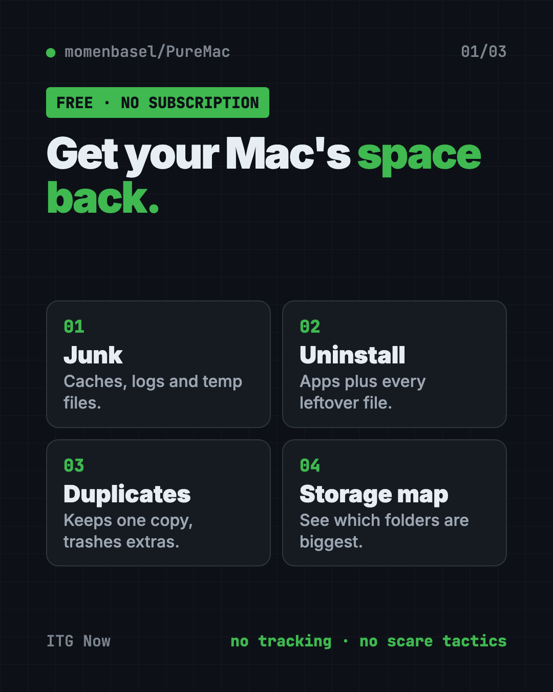
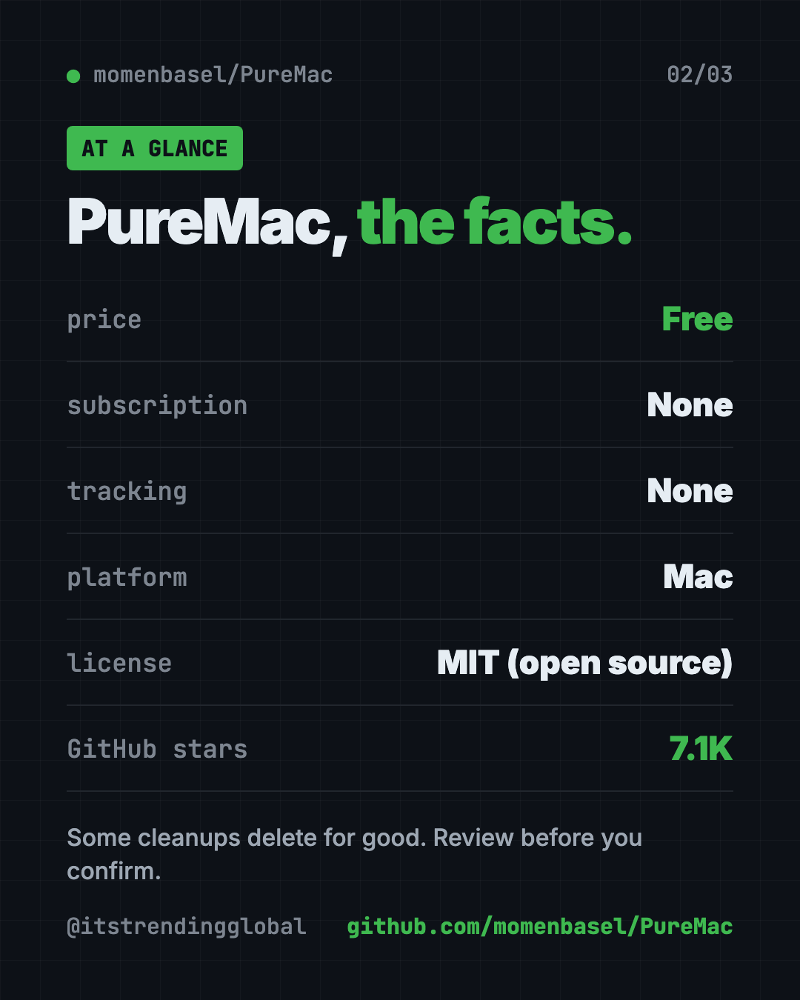
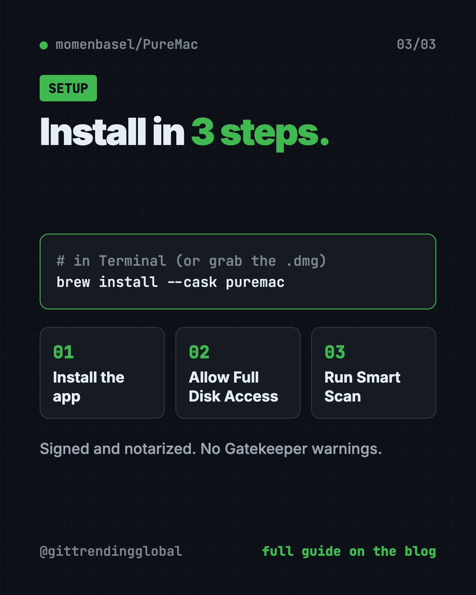

PureMac: Free CleanMyMac Alternative, No Subscription
- Published 15 Oct 2026
- Updated 16 Oct 2026
- 7 min read
- License MIT
- By the ITG Now team
PureMac is a free CleanMyMac alternative for your Mac. It clears out junk files, fully removes apps you no longer use, and finds duplicate files, with no subscription and no tracking.
It also skips the scary red warnings many cleaner apps use to make you pay. This guide covers what it does, how to install it in a minute, and what to be careful with.
Key takeaways
- Free and open source. MIT license. No subscription, no trial, no account.
- No tracking. The README says it sends no analytics, crash reports or usage stats.
- Real uninstalls. It finds the hidden files an app leaves behind, not just the app itself.
- Honest scans. No fake "your Mac is at risk" alarms. You see plain facts and decide.
- Be careful: some cleanup steps delete files for good, so review before you click.
What is PureMac?
PureMac is a Mac app that helps you get disk space back and keep your Mac tidy. Its tagline is simple: "Reclaim your Mac."
The maker built it because base-model Macs often ship with 256 GB of storage that you can't upgrade later. Every gigabyte counts.
Many Mac cleaners charge a yearly fee. The README's own comparison table lists CleanMyMac at $40 or more a year. That's why people look for a free CleanMyMac alternative. PureMac is free, and its code is public, so anyone can check what it deletes.

Where does your Mac's space go?
Your Mac says the disk is almost full. You didn't save that much. So where did it go?
Often it's hidden clutter:
- Cache files. Saved copies apps keep so they load faster.
- Log files. Records apps write about what they did.
- Leftovers. Files from apps you deleted years ago, still sitting in your Library folder.
- Developer junk. If you code, tools like Xcode, Docker and npm can pile up gigabytes.
PureMac scans for all of these and shows you what it found.
How to use PureMac (real examples)
- Free space before a big download. Run Smart Scan, review what it found and clear system junk, caches and old logs.
- Fully remove an app. Pick an app you no longer use. PureMac finds its settings files, caches and helpers too. You can even right-click an app in Finder and choose Uninstall with PureMac.
- Clean up after old apps. The Orphan Finder shows files left behind by apps you already deleted.
- Find duplicate photos and files. Duplicate Finder groups exact copies, keeps one safe, and moves extras to the Trash after you confirm.
- See what's eating your drive. Space Explorer shows which folders take the most room.
💡 Tip: Start with the App Uninstaller. Old apps you forgot about often hide the biggest leftovers.
What else can PureMac do?
The README lists more tools beyond cleanup:
- Similar Photos. Finds look-alike images and shows them side by side. It doesn't delete them for you, since "similar" is a guess.
- Protection check. Looks at your Mac's built-in safety settings like FileVault and the firewall. The README is clear: this is a settings check, not an antivirus.
- Performance. Shows which apps use the most CPU and memory, plus what launches at startup.
- App updates. Checks for updates to apps you installed with Homebrew.
- Scheduled cleaning. Optional. Runs on a timer from hourly to monthly.
- AI app cleanup. Clears logs and caches from local AI apps like Ollama and LM Studio.
Is PureMac safe?
PureMac asks for Full Disk Access. That's the deepest permission macOS gives an app. It needs it to reach hidden folders like Mail downloads and app containers.
The maker takes that seriously. The README makes promises you can check in the code:
- No telemetry, ever. The app makes no network calls to the makers.
- No fake urgency, like big red junk counters.
- No claims to "boost RAM" or "speed up your Mac."
- Apple's own apps can't be uninstalled through it.
- Manual cleanups ask you to confirm first.
It's also honest about "purgeable space." It shows the number but won't pretend to clear it, because macOS manages that space itself.
⚠️ Heads up: App uninstalls and duplicate removal go to the Trash. But dashboard cleanup, scheduled auto-clean and emptying the Trash can delete files permanently. Review every list before you confirm.
PureMac at a glance
| Price | Free, no subscription |
| Works offline | Yes, scans and cleanup work offline |
| Platforms | Mac only |
| License | MIT (open source) |
| Tracking | None, per the README |
| Permission needed | Full Disk Access |
| Best for | Mac owners low on space who don't want another subscription |

How to install PureMac
These steps come from the PureMac README.
The easy way: download the app
- Go to the PureMac Releases page on GitHub.
- Download the
.dmgfile. - Drag PureMac into your Applications folder.
The app is signed and notarized by Apple, so the README says you won't see Gatekeeper warnings.
The one-command way
If you have Homebrew (a free app installer for Mac), open Terminal and copy and paste this:
brew install --cask puremac
First launch
When you open PureMac, it walks you through turning on Full Disk Access. It even shows a short animation of the exact switch to flip in System Settings. If you skip it, some cleanup areas will be incomplete.
For Terminal fans
There's also a keyboard-driven command line version. Copy and paste this:
brew install momenbasel/tap/puremac-cli
puremac
To preview a developer cleanup without deleting anything, copy and paste this:
puremac clean dev --dry-run
Let Claude or Codex set it up for you
Claude Code and OpenAI Codex are AI helpers that run in your Terminal. They can do setup steps for you while you approve each one.
Copy and paste this:
Please help me install PureMac, the free Mac cleaner from github.com/momenbasel/PureMac.
1. Check if I have Homebrew. If not, explain what it is before installing it.
2. Install PureMac with: brew install --cask puremac
3. Walk me through giving it Full Disk Access in System Settings.
4. Tell me which cleanup options delete files permanently and which use the Trash.
Then try asking:
Show me how much space my Xcode, Docker and npm caches are using before I clean anything.
Install the PureMac command line tool and run a dry run of the developer cleanup.
Explain my Mac's storage in plain English and suggest what's safe to remove.

Our take
PureMac is what a Mac cleaner should be. It's free, it's honest, and it doesn't treat you like someone to scare into paying.
What we like:
- No subscription, no account, no tracking.
- Full app uninstalls that catch hidden leftovers.
- Plain, calm reporting with no fear tactics.
- A lot of tools in one app: duplicates, storage map, startup items.
- Open code you can check.
What to watch for:
- Some cleanups delete files for good. Read before you confirm.
- Leftover matching is a best guess, so review results before removal.
- Scheduled auto-clean runs on its own once you turn it on.
- Mac only, no Windows version.
Prefer the Terminal? Read our guide to Mole, a free Mac cleaner that runs in Terminal. Want more free Mac helpers? Try Thaw to tidy your menu bar or Vorssaint Utils, one free app instead of a dozen paid ones.
FAQ
Is PureMac really free?
Yes. PureMac is free and open source under the MIT license. There's no subscription, trial or account.
Is PureMac a good free CleanMyMac alternative?
For cleanup, app uninstalls and duplicate finding, yes. It's free, has no tracking, and its code is public so you can see what it removes.
Does PureMac collect my data?
No. The README says it collects no telemetry, crash reports or usage analytics, and never uploads scanned paths.
Why does PureMac need Full Disk Access?
macOS hides some folders, like Mail downloads and app containers, from every app by default. Without Full Disk Access, some scans will be incomplete.
Can PureMac free up purgeable space?
No. PureMac shows purgeable space but doesn't list it as junk. The README explains that macOS manages that space itself.
Get PureMac: github.com/momenbasel/PureMac
Latest AI news
- Meta gives away its big Muse Spark AI for free
- Chip startup Tenstorrent raises $1.5B at $6.2B value
- Ex-OpenAI engineer in spy case had Saudi backing: prosecutors
- Hacker used AI agents to break into 100+ company sites
Keep reading

VoiceStudio: Free ElevenLabs Alternative
VoiceStudio is a free ElevenLabs alternative. Clone a voice, dub videos and turn text into speech on your own Mac, Windows or Linux computer.

HyperFrames: Make AI Videos From HTML
HyperFrames is a free tool that makes AI video from HTML. Your AI agent writes a web page, and HyperFrames renders it into an MP4 video.

Folia: Free Animated Lyrics Music Player
Folia is a free animated lyrics music player that shows full-screen moving lyrics for your local music, Navidrome and more. What it does and how to start.